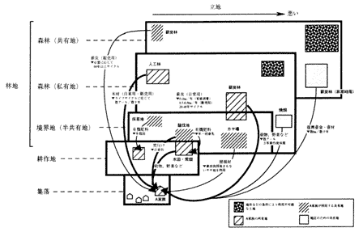
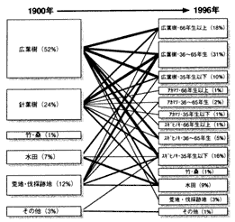
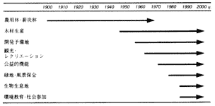

里山について社会の関心が高まりつつあります。しかしその一方で，里山の何を問題にしているのかよくわからない，今なぜ里山を管理し保全しなればいけないのか，そもそも里山とは何を指すのか，といった声も林業関係者の間から多く聞かれます。
里山という言葉は明確に定義されたものではないようで，資料を調べるとその目的や背景によって様々に使われてきたことがわかります。既存の定義はおおむね地理的なもの，植生的なもの，里山が成立する仕組みや機構に着目したもの，社会文化的なものに大別できそうです。学術書や啓蒙書には，機構的，社会文化的な定義が多く，行政文書には地理的あるいは植生的な定義が一般的という傾向がありますが，近年では機構的な定義が増えているようです。筆者らもこの定義が最も適切であると考えますので，ここでは「日常生活および自給的な農業や伝統的な産業のため，地域住民が入り込み，資源として利用し，撹乱することで維持されてきた，森林を中心にしたランドスケープ」と定義して話を進めたいと思います。 里山の範囲は，森林のみでなく農地なども含めたランドスケープ(集落，田圃，森林など異質の土地利用，植生の集合で，視覚的に一体となった地域のまとまり)として捉えることが適切でしょう(田端編1997，守山1997)。なぜならば，里山は農耕を主たる生業とする地域社会の関与により成立するものであり，また生息する生物も，森林と農耕地双方を利用する例が多く見られるからです。
里山の示す暖昧な印象は，一義的には里山という存在の多様さと，成立の仕組みの複雑さに由来するのではないでしょうか。加えて，現在里山に関心を持つ人々の価値観や，里山への期待も多様であることが，問題をいっそう複雑にしているものと思われます。
里山といわれる地域を歩くと，それが様々な二次林で構成されていることに気づきます。北上山地では，現在成立している里山二次林の種構成が，過去の土地利用により大きく異なっていました(表1)。火入れや伐採方法など，人の関与の違いにより更新する樹種が選択され，異なったタイプの二次林が成立していくのです。このような二次林はまた，人との関係にしたがって地域の中に配置されています。丹後半島の例では，短伐期の柴山からやや伐期の長い薪炭材，不定期伐の高齢ブナ二次林などが，集落の周囲に一定のパターンを描いて分布し，それぞれは日常生活の燃料や緑肥の採取から婚礼や火事の後の集落の再建といったまれな出来事まで，集落の住民のいろいろなレベルでの利用により成立していました(図1)。これらのことから，里山は自然的な立地ばかりではなく，地域社会の社会的・文化的な構造にも対応した存在であることがわかります。里山の本質はその植生にあるのではなく，むしろ植生を作り上げてきた地域社会と生態系の相互関係にあるのだとも言えるでしょう。しかし，このような地元の農耕集落を担い手とする里山の前工業化社会的な利用は，1960年代でほぼ終焉し，もっぱら開発や拡大造林の対象として扱われる時代が続きました(図2)。近年の再評価は，従来の担い手であった地域の農業者とは異なった人々による，異なった期待を背景にしているようです。里山保全を目指して活動する各地の市民グループは都市からの参加者を多く含み，その視線は非農業者的な性格が強いものと思われます。メディアの論調も含めて，現在の里山への期待には，風景の維持，生態多様性の保全，余暇・教育の場としての整備などが重きを占めています。つまり里山は，人々が非農業者として郊外を意識し始めたときに，環境問題として再登場してきたわけです(深町ほか編1998)。さらに，かつて里山に存在したであろう，人の利用も組み込んだ生態系としての持続性に注目し，地球温暖化防止につながる化石資源の使用抑制という新しい観点から，里山資源を利用していこうという動きも広がりつつあります(室田1985)。
| 過去の土地利用形態 | 現在成立する:次林の主要な構成種 |
|---|---|
| 草地(放牧・採草地) | シラカンバ アカマツ ミズナラ ダケカンバ |
| 二次林(草地周囲林・薪炭材) | ミズナラ コナラ イタヤカエデ エゾヤマザクラ |
| 天然林 | ブナ ウダイカンバ ホオノキ ハウチワカエデ |

図1 丹後半島山間部における1960年頃の土地利用スキーム

図2 里山林に対する社会的な関心の変化
このように里山の管理・保全は，単一樹種単一目的に近い木材生産のための針葉樹人工林経営の対極にあり，今まで林業関係者がなじんできた思考の延長では，対応が難しい問題であると思います。では今後我々は，どのように里山に対処していけばよいのでしょうか?
里山の本質は，里山を作り上げてきた地域社会と生態系の相互関係にあると思いますので，里山を保全するということは，単にコナラ林の植生を保護するということではなく，かつてコナラ林を成立させてきたような，地域社会が森林へ継続的に関与する何らかの仕組みを保障する，ということだと考えます(亀山編1996)。補助金や公共事業などによる一時的な処置では，当面林相を維持することはできても，里山としての持続は困難でしょう。たとえ公的な援助を受けるにせよ，その地域で継続的に里山に関与していこうという意思を持った担い手が必要です。里山の大半は私有地であり，そこには管理意欲を喪失した多数の所有者がいると推測されます。彼らの意思を管理に向かわせるためには，里山に何らかの経済的利用価値を見出すことが必要であり，そのためにも，前述のような里山の生物資源の持続的利用や，都市市民への開放などの検討が望まれています。
しかしながら，一度存立基盤が失われ，崩壊してしまったシステムを再構築することは容易ではありません。そして現在では，多様な里山が多様な期待を背負っているのであれば，もはや問題の解答も一つにしぼることができないのではないでしょうか。このことを無視して里山管理をマニュアル化することは危険でしょう。様々な人々の参加を促しながら，ケースごと地域ごとに複数の方策の組み合わせで実行可能な管理・保全体系を考えていくことが，最も妥当な道筋だと思います。これは具体的には，近年地域計画手法として取り．上げられつつあるシナリオの提示と選択というプロセスにあたるでしょう。まず地域の里山の現状を分類分析し，それぞれの類型の生物相や維持されてきた仕組みなどを，可能な限り理解します。あわせて生物多様性の保全や資源利用，レクリエーション利用など，今後各類型に求めようとする機能や管理目標をついくつかの段階で設定します。そして伐採から放置までを含め，それらを実現するために取りうる方策とコスト，管理結果などについて予測を行いっそれぞれのシナリオを用意します。そのうえで人々の参加と合意により，地域ごとの里山管理・保全方針を選択していくわけです。
このようなシナリオの提示と選択は，里山のような複雑な問題の解決には合理的な方途ではあるのですが，実施は容易ではありません。そもそも我々は里山の仕組みについて，シナリオを作成してその管理・保全方針を検討するのに十分な理解を，いまだ持ち合わせていません。人工林は言うまでもなく，原生的な天然林に較べても，里山やそれを構成する二次林，その生物相に関する情報は貧困です。里山を支える地域社会の潜在力についても同様です。しかしその一方で，劇的に変容しつつある里山の保全は緊急課題であり，情報や理解が限られているにもかかわらず速やかな対処を迫られている現実があります。したがって，シナリオの選択，地域での合意といった手順を踏んで総合的な解決を目指す努力と並行して，市民ボランティアの参加など，できることから少しでも実践していくという戦略を進めることも必要でしょう。
里山の管理・保全事業を積極的に推進するための妙案は，今のところ見つかっていません。市民活動などの応援を得ても，現状では広大な里山のほとんどは結局放置にならざるを得ないと予想されます。所有者個人による里山の積極的な利用が困難で，かつ所有や権利設定も複雑なことを考えあわせると，既存の所有と管理の枠組を超えた新しい制度が必要でしょう(山田編1994，上杉1998)。また，里山が地域の自然環境の中に大きな位置を占める以上，放置せざるを得ない場合でも管理対象としての放棄はすべきではありません。管理のうえで指導的な役割を果たすことになるであろう自治体には，放置した結果の予測も行いながら政策を立てていくことが望まれます。
ところで，そもそもなぜ里山を管理し保全しなければならないかという問いに対する十分な回答を，我々はまだ持ち得ていないように思います。各種の機能発揮への期待は，社会を里山の管理・保全へと向かわせる重要な動機付けであり，本稿においてもそれらを基盤とした複合的な管理方法の選択を示唆しました。しかし里山の管理・保全の根拠を機能にのみ頼った場合，機能がどこかで何らかの形で代償されれば，投資効率などの点から必ずしも里山にこだわる必要はない，という結論が引き出される可能性もあります。
近世から近代における里山は，過度の利用により荒廃した森林であり，現在ようやく回復の過程にあるのだから放置したほうがよい，という主張も根強くあります。しかし里山では，人が土地利用という形で撹乱を加え続けてきたことで，氷期にさかのぼるともいわれる独特の生物相が温存されてきましたが，これらは利用の停止とともに急速に失われつつあります(守山1988，石井ほか1993)。さらに，里山も所詮人の開発の結果成立した自然であり，開発するにせよ放置するにせよ，いずれそれなりに回復するだろうという楽観論もあります。これについては，長期間をかけて形成されてきたと推測されるかつての里山の持っていた変化速度に較べ，この半世紀の変化がいかに急激であったかということを指摘しておきたいと思います(図3)。まして重機を使用して数年のうちに広大な景観を一変してしまうような現在の開発は，生物が移動し新たな環境になじんでいく余地を，十分には残していないのではないでしょうか。
里山は，少なくとも過去一定期間地域社会の中で持続してきた自然資源利用のシステムであり，その影響下で一定の生物相とランドスケープを形成してきました。そして我々は，そのシステムの喪失あるいは急激な変質の結果を，またよく知り得ていません。まさにこのわからない，予測できないという点において，里山を保全すべき第一の根拠があるものと考えます。なぜならわからない変化は持ち込まない，あるいは可能な限り緩和するということが，自然環境に対処するうえでの社会の倫理であると考えるからです。 また里山を保全する理由として，従来あまり認知，評価されてこなかった文化的あるいは精神的価値の復権が必要であるとも考えます(トゥアン1992)。例えば風景としての里山を惜しむ気持ちをどう考えるかということです。このような価値は評価しにくいので，暖昧な感傷論として議論から排除されてきたきらいがあります。しかし里山に関心を持つ人々を根本で突き動かしている動機の多くは，実は個別の機能よりもこの点に由来しているのではないでしょうか。従来すくいきれなかった里山の文化的価値をいかに認知していくか，このことも今後の大きな課題でしょう。

図3 丹後半島山間部における里山の変容パターン
実線の太さは，要素間の移動の大小を示す(深町ほか 1997)
本稿で触れた里山問題に関連する様々な考え方の多くは，里山に固有のものとして封印すべきではないと考えます。例えば多様な目的の組み合わせとその調整による森林管理，人々の参加と合意形成による管理計画策定，文化的価値の評価，結果の予測できない環境改変を避ける倫理，さらにはここで詳述できなかった地域を単位とした資源の循環利用システム等などは，現在変革を迫られている林業や森林管理のシステムの再構築にも，大きな示唆を与えるものではないでしょうか。里山の保全・管理を考えるということは決して趣味や道楽ではなく，我々林業技術者がこれからの森林管理を考えていくための，試金石となり得る課題なのだろうと思います。
{kind=link}
{kind=link}
{kind=link}